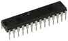

Parts
These are main components used to construct the LED Wheel.
16 RGB Common Anode LEDs
For this project I used 16 RGB LEDs from HKJE LED Lamp Center. Each LED has three cathodes(-) and one common anode(+). I choose the diffused type of LEDs so that the light would fill up the surface of the LED bulb. For an example of diffused vs normal LEDs see this instructables page.
| Size: | 5mm |
| Material: | InGaN |
| Emitting Color: | Manual control RGB 4 PIN COMMON CATHODE |
| Reverse Voltage: | 5.0V |
| RED: | 625-630nm 2.0-2.4v |
| GREEN: | 515-520nm 3.6-3.8v |
| BLUE: | 465-470nm 3.6-3.8v |
| Lens Type: | Diffused type |
| Luminous Intensity: | 6,000 mcd max 8,000+ mcd |
| DC Forward Current: | 20mA |
| Viewing Angle: | 25 degrees |
| Lead Soldering Temp: | 260oC for 5 seconds |
3 TLC5940NT LED Controllers
To control the 16 RGB LEDs I used three TLC5940NT LED controller chips. These chips provide 4096 degrees of PWM control ( brightness ) for each individual LED. One TLC5940NT can control 16 LEDs.
This component is central to the design of the LED wheel, and detailed completely in the LED controller section of this report.
Hamamatsu Shaft Encoder
To measure the speed of the wheel arm I used the Hamamatsu Photo reflector P5587. This shaft encoder contains a high power infrared LED emitter and a photo IC (receptor). The LED emits infrared light which bounces off a near by surface, and is received by the photo IC.
More information about the shaft encoder can be found in the Shaft Encoder. section of this report.
Atmel AT90USB1287 Micro-Controller
The micro-controller used in this project is an all-in-one demonstration board, the AT90USB1287. A full data-sheet and specs are available on the Atmel Product Website.
Mitsumi M36N-2 DC Motor
To turn the wheel arm I used one Mitsumi M36N-2 DC motor. It provides high torque and is responsive at low voltages. For a full spec on this motor visit the on-line spec from Mitsumi.
LM1086 3.3V Regulator
To provide 3.3 volts to the LED controller chips. I used this National Semiconductor voltage regulator. It provides 1.5ma of current, more than enough to power all 16 LEDs at full brightness. The data-sheet for the LM1086 can be found here.
LM1086 Adjustable Regulator
To provide power ( 3.0 - 6.0 volts) to the DC motor. I used this National Semiconductor voltage regulator. It provides 1.5ma of current the same as the 3.3 volt regulator used to power the LEDs . The data-sheet for the LM1086 can also be found here.
LM7805C 5.0V Regulator
To provide 5.0 volts to the shaft encoder and the AT90USB1287 I used this National Semiconductor voltage regulator. The data-sheet for the LM7805C can be found here.
Wheel Arm
The following picture is of the fully assembled wheel arm.
The schematics for this circuit are shown the Schematics and Code section of this report.
Dome and Base
To encase the wheel I found this tinted plastic dome ( about 22 inches in diameter ).
The base ( also 22inches ) was cut from normal inch press-board using a miter saw.

The DC motor was controlled from a 1K potentiometer and a power switch.
Three large metal washers were used to prop up the dome from the base.
Batteries
To power the DC motor I used a 9.0 volt battery pack called "dynamite stick".
To provide ~6.0V to both the 3.3V and 5.0V regulators I used four ultralast rechargeable 3.3V batteries.